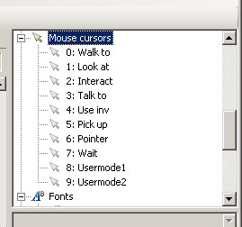

Getting Started with AGS - Part 9
Cursors
It's easy to overlook mouse cursors, but they provide the essential interface between the player and the game world. In AGS, each mouse cursor provides a different mode of interaction to the player.

The Cursors list
Unlike most of AGS, mouse cursors modes are not generic - that is, AGS has special coded behaviour for some of the cursors. This means that you are unable to customize what some of the cursor modes do - let's list these ones briefly:
- Mode 0 (Walk to) - this will always move the player character to the co-ordinates at which the mouse was clicked
- Mode 4 (Use inventory) - AGS will only allow this mode to be selected if the player character has an active inventory item, and it will always invoke the "Use inventory" event.
- Mode 6 (Pointer) - this is used whenever a normal Windows-style mouse pointer is required. For example, when the user is prompted to select a dialog option; when a popup GUI is displayed, and so forth.
- Mode 7 (Wait) - this cursor is shown whenever the player cannot interact with the game world (ie. during a cutscene). It is automatically shown during blocking script functions.
All the other cursors are 'normal' cursors, in that you can use them for whatever purposes you want.

If you want to create a Lucasarts-style game where the mouse cursor disappears during cutscenes, the easiest way to do it is simply to import a blank image over the Wait mouse cursor.
The Cursors editor pane is fairly self-explanatory. Use the property grid to set a graphic for the cursor; and click inside the graphic to set the cursor's hotspot, as we did for inventory items. (The hotspot sets which spot under the cursor will be activated when you click with it).
There are a couple of other options you can set for cursors, let's cover them briefly:
- Standard Mode tells AGS that this is a normal user-selectable cursor. It is used when cycling through mouse cursors, to determine whether to use the cursor or skip over it. For example, if during the game you disable the current cursor, AGS will change to the next available Standard Mode.
- Animate allows you to make an animated mouse cursor. If you check the box, then you need to set the View property to the view that you want to use for the animation (loop 0 of the view will be cycled continuously). You can also select "AnimateOnlyOnHotspot" to make the cursor only animate while it is over something that the player can interact with; and "AnimateOnlyWhenMoving" to do a QFG4-style cursor which only animates while the player is moving it around.

You can right-click the "Mouse cursors" tree node and choose "New Cursor" to create additional cursors to the standard 10. If you do so however, any extra cursors you create will not have events created for them, so you will have to handle their clicks using the "Any Click" events.
Fonts
The empty game template comes with a couple of basic fonts, but you don't have to use them - you can import your own.

The Font Editor
By default, you'll see three fonts are available. Font 0 is the standard font used in message boxes. Font 1 is the speech font, used with lucasarts-style speech; and font 2 is an outline font for the speech font.
Outlines are pretty much essential for lucasarts-style speech. Since the text is drawn directly onto the screen and not onto a message box, without an outline it could be very hard to read the text, depending on what colour the screen happened to be behind it.
There are two ways to do outlines - AGS can do an automatic outline, or you can import a special outline font. They both have advantages:
- Automatic outlining is easy to use - just set the option, and it works with any font.
- Using an outline font is faster in the game, since it is just drawn once (whereas automatic outlining has to redraw the line of text 8 times).
Importing fonts
AGS supports both TrueType (TTF) and SCI (Sierra's format) fonts. To overwrite an existing font, simply open up its editor and click the "Import over this font" button. To create a new font slot, right-click the Fonts tree node, and select "New font".
The advantage of SCI fonts is that they are significantly faster to render than TTF fonts; but the disadvantage is that they only support 128 characters, which means that they are only useful for English. If you want to support other languages then you'll need to import a TTF font in order for the extended characters such as é, í and ñ to work.
Where can you get a SCI font? Well, there are two ways:
- Create your own font and save it in SCI Font format, using Radiant's FontEdit application.
- Extract the font from a Sierra game, using the SCI Decoder program available on the internet (note however that this will have copyright implications for your game).
- You can get a Sierra SCI Font Pack on the AGS website.

If you go to your Windows Fonts folder to try and import a TTF font, you will not be able to do so (double-clicking them will open them up in the Windows Font Viewer). Unfortunately there is nothing I can do about this - you must either type the filename in manually, or copy the font to another folder and import it from there.

By default, font 0 is used as the normal text font, and font 1 is used as the speech font. To use any additional fonts, the script properties Game.NormalFont and Game.SpeechFont can be used to change the active fonts.
Conclusion
That's it for the "Getting Started" tutorials. I hope they've helped you to get a grasp of the AGS basics. If there's anything you didn't really understand or that you think should be covered but wasn't, please let us know on the Beginners Technical Forum, so that the tutorials can be improved to explain it better.